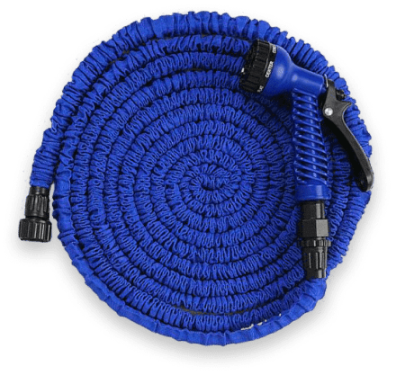

<section class="info__section">
    <div class="container">
        <div class="info__section-wrapper">
            
            <h2 class="info__title">
                ОСНОВНЫЕ ПРЕИМУЩЕСТВА
            </h2>
            <div class="info__items">
                <div class="info__item">
                    
                    <h3 class="info__item-title">
                        Устойчив к ударам 
                        и нагрузкам
                    </h3>
                    <p class="info__item-text">
                        Благодаря ударопрочным соединителям из 
                        АБС-пластика
                    </p>
                </div>
                <div class="info__item">
                    
                    <h3 class="info__item-title">
                        Долговечный и износостойкий
                    </h3>
                    <p class="info__item-text">
                        Благодаря двухслойному латексу и полиэфирному полотну
                    </p>
                </div>
                <div class="info__item">
                    
                    <h3 class="info__item-title">
                        Длина до 30 м
                    </h3>
                    <p class="info__item-text">
                        Под действием давления воды шланг увеличивается 
                        в длине в 3 раза
                    </p>
                </div>
            </div>
        </div>
    </div>
</section>